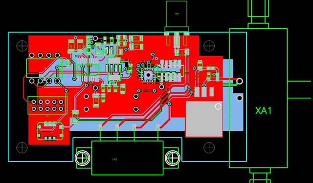
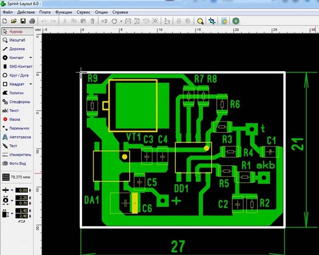
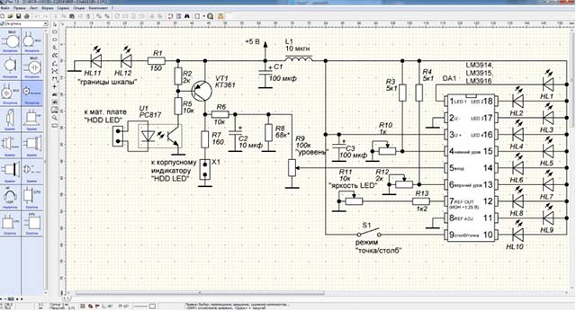
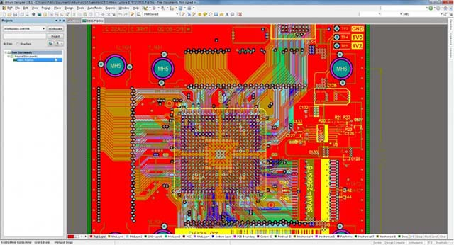

Печатные платы широко применяются в различных радиоэлектронных устройствах и электротехники. Также они отлично подходят для соединения микроконтроллеров и датчиков.
Процесс конструирования этих плат базируется на автоматизированном программном обеспечении и прокладки проводников (трассировка или разводка).
В данной статье собраны программы для создания печатных плат и проектирования схем электрических принципиальных. Среди них имеются универсальные конструкторы: P-CAD, sPlan, Sprint Layout, Altium Designer, которые пользуются огромным спросом у отечественных радиолюбителей, инженеров разработчиков и студентов технических ВУЗов. С помощью этих программ можно произвести полный цикл сквозного проектирования, от изготовить печатную плату в домашних условиях, используя все необходимые инструменты и материалы.
P-CAD
Пожалуй, до сих пор, самая популярная САПР электронных устройств, хотя свое существование прекратила весной 2008 года. В данный пакет вошло более 60 новых функций и инструментов.
Основные возможности P-CAD:
- Удобный пользовательский интерфейс, похожий на большинство популярных программ для Windows;
- Хранение проектной информации в бинарных и текстовых файлах;
- Удобная справочная система;
- Проект схемы может содержать 999 листов, проект платы до 999 слоев (11 из них стандартных);
- Число цепей в проекте до 64000;
- Число вентилей в компоненте до 5000;
- Максимальное число выводов у компонента 10000;
- Максимальные размеры листа схемы или чертежа печатной платы 60х60 дюймов;
- Поддержка дюймовой и метрической систем мер;
- Предельное разрешение 0.0001 дюйма (0.1 мила) или 0.01 мм (10 микрон);
- Минимальный угол поворота компонентов на плате 0.1 град.;
- Длина имен компонентов до 30 символов, максимальный объем текстовых надписей и атрибутов до 20000 символов.;
- Механизм переноса изменений печатной платы на схему и наоборот (Engineering Change Order, ECO).;
- Библиотеки компонентов, содержащие более 27000 элементов и сертифицированные по стандарту ISO 9001.
Пользовательский интерфейс программы P-CAD
Но основным нововведением стала управляющая оболочка Design Manager (Менеджер Проектов), которая позволяет просто и удобно работать (просматривать и управлять) с данными. Другая новинка - Visual Placement Area (VPA) - система интерактивной расстановки компонентов, которая анализирует внесенные ограничения и на их основе показывает зону, доступную для размещения выбранного компонента. Новый бессеточный автотрассировщик (возможна как сеточная, так и без сеточная трассировка) обладает возможностью указывать направление прокладки трасс для каждого слоя ,с выбором одного из 6 неортогональных вариантов.
Кроме того, внесена поддержка стандартных Windows-шрифтов True Type в файлах формата Gerber и ODB++. По заявлению представителей компании Altium, P-CAD объединяет в себе возможность разработки постоянно усложняющихся печатных плат, простоту использования и глубокий контроль результатов, особенно на этапе проектирования топологии. P-CAD отличает повышенная точность и надежность работы.
sPlan
sPlan – простой и удобный инструмент для черчения электронных и электрических схем. sPlan создает качественные файлы для печати, которые могут быть предварительно просмотрены, имеется изменение масштаба и расположения схемы на листе.
Много мощных функций, как обширная библиотека компонентов, использование свободно определяемых листов формы фона, автоматическая нумерация, поиск, списки и т.д. помогут вам . Даже новичок создаст совершенно работоспособные принципиальные схемы в течение нескольких минут.
Пользовательский интерфейс программы sPlan.
Помимо основных, заложенных изначально, готовых компонентов, программа позволяет создавать чертежи с помощью геометрических фигур: прямоугольника, кривых, эллипса, замкнутых и незамкнутых ломаных. sPlan в своем арсенале имеет такие полезные функции:
- увеличительное стекло – помогает устанавливать желаемый масштаб рабочего пространства;
- создание дубликатов отмеченных компонентов;
- элемент редактирования для разного выделения, удаления и перемещения объектов на чертеже;
- зеркальное отражение;
- пропорциональное изменение размера;
- поворот элемента на нужный угол.
Графика в приложении опирается на сетку, которая привязана к вертикальной и горизонтальной линейке. Благодаря этому объекты перемещаются исключительно на определенное расстояние, по умолчанию это значение составляет 1 мм.
Утилита работает с форматами файлов: JPG, BMP, EMF, GIF. Она также располагает и собственными форматами. Файлы чертежей – SPL, страниц библиотек – LIB. Помимо этого, sPlan работает с объектами, именуемыми формами - файлы, которые к чертежу добавляются в виде фона. Расширение файлов форм – SBK.
Отталкиваясь от всего вышеописанного, можно выделить основные достоинства программы:
- интуитивный интерфейс;
- приличная функциональность;
- большое количество библиотек элементов;
- легкость создания собственных библиотек и элементов.
Программа прекрасно работает с векторной графикой, в ней имеются все необходимые функции для создания качественных чертежей, электронных и электрических схем, необходимых не только инженеру, но и простому электрику. Все радиоэлементы поделены на группы, что позволяет быстро найти нужный элемент и сократить время необходимое для создания схем.
Sprint-Layout
Программа Sprint Layout предназначена для черчения печатных дорожек с последующим перенесением рисунка на фольгированный текстолит перед травлением фольгированного текстолита. На фото ниже уже готовая печатная плата, выполненная с помощью этой программы.
На сегодняшний день эта прога считается самой простой и удобной прогой для черчения и полуавтоматической трассировки печатных плат. Девять из десяти радиолюбителей выбирают именно ее.
Пользовательский интерфейс программы Sprint Layout
Интерфейс приложения очень дружелюбный, даже новичок не испытает трудностей начиная с ним работу. Основное поле представлено в виде сетки – это рабочее пространство – место для прокладки контактов под элементы.
Слева расположена панель инструментов, содержащая все необходимое для трассировки плат. Большим плюсом этой программы является встроенная библиотека компонентов. Здесь можно найти любые радиоэлементы.
Данное приложение не подходит для профессионального использования, поскольку его возможности несколько ограничены: небольшой размер плат (300 на 300 мм), невысокая плотность элементов. Тем не менее, понятная и логичная структура программы идеальна для начинающих проектировщиков, студентов, которые не желают тратить много времени на изучение сложных утилит.
Altium Designer
На мой взгляд самая полнофункциональная система для проектирования схем электрических принципиальных, трассировки печатных плат, их 3D визуализация, возможность оформления полного комплекта конструкторской документации на электронный модуль (правда придется адаптировать ГОСТовские оформления рамок к уже имеющимся). Программа в большей степени рассчитана на профессионалов, чем на радиолюбителей. Достойное продолжение P-CAD, фирма Altium воплотила все необходимое и даже больше в своем программном обеспечении, исправила недочеты, коими обладали версии P-CAD.
Пользовательский интерфейс программы Altium Designer
Состав программного пакета Altium Designer включает весь необходимый набор инструментов для создания, редактирования и правки работ на основе электрических и программируемых интегральных схем. Редактор схем позволяет работать с проектами любого размера и сложности, преобразовывая их в простейшие подблоки. Цифро-аналоговое моделирование учитывает почти все реальные параметры и предоставляет в распоряжение конструктора огромное количество различных анализов, включая анализы переходных процессов, частотный, шумов, передаточных функций, Фурье, методом Monte-Carlo, с изменением значений температуры.
На схемотехническом уровне проверяются и устраняются различные импедансы и перекрестные отражения. Редактор печатных плат программы содержит уникальные средства для автоматического (программы Statistical Placer, Cluster Placer) и интерактивного размещения компонентов. Топологический трассировщик Situs использует полностью настраиваемый алгоритм для решения задач разводки печатных плат с большой плотностью установки элементов. Он может работать по неортогональным направлениям и с самостоятельным выбором слоев. Постоянно обновляемые библиотеки программы хранят более 90 тысяч компонентов. Многие из них имеют модели посадочных мест, IBIS и SPICE, а также 3D-модели. Каждую из них можно создать в программе самостоятельно с минимальными затратами времени путем последовательного ввода сведений о компоненте.
Можно отметить следующие достоинства данного пакета САПР:
- простой и интуитивно понятный пользовательский интерфейс системы: его настройка согласно требованиям конкретного пользователя, а также использование меню с командами на русском языке и множества «горячих» клавиш позволяют научиться эффективно работать с программой менее чем за три недели;
- возможность коллективной работы над проектом;
- поддержка совместимости с многими старыми и современными популярными САПР РЭС (ECAD) и механических САПР (MCAD);
- все действия, выполняемые пользователем вручную, могут быть описаны с помощью макросов и выполнены автоматически, что открывает широкие возможности для автоматизации рутинных операций процесса создания принципиальных схем и проектирования печатных плат;
- программа имеет набор документации на русском языке, разработаны специальные методические указания для начинающих. Базовая программа обучения рассчитана на пять дней и позволяет пользователям выработать правильные навыки работы в этой системе;
- программно-аппаратный комплекс для создания большинства современных РЭС при достаточно небольшой стоимости.
Из прочих важных функций данной САПР стоит возможность послойного нанесения компонентов на плату и поддержку практических всех существующих форматов схем (NC Drill, ODB++, DXF, VHDL, Gerber, IPC-D-356 и так далее).
Заключение
В статье вкратце мы пытались рассказать про сквозное проектирование электронных устройств от создания схемы до подготовки Gerber файлов для производства. А также, не свойственных данным пакетам САПР, создание чертежей. Услуги по трассировке печатных плат получите в этом разделе. Спасибо за внимание!
Примеры топологий печатных плат сделанных в вышеперечисленных САПР



